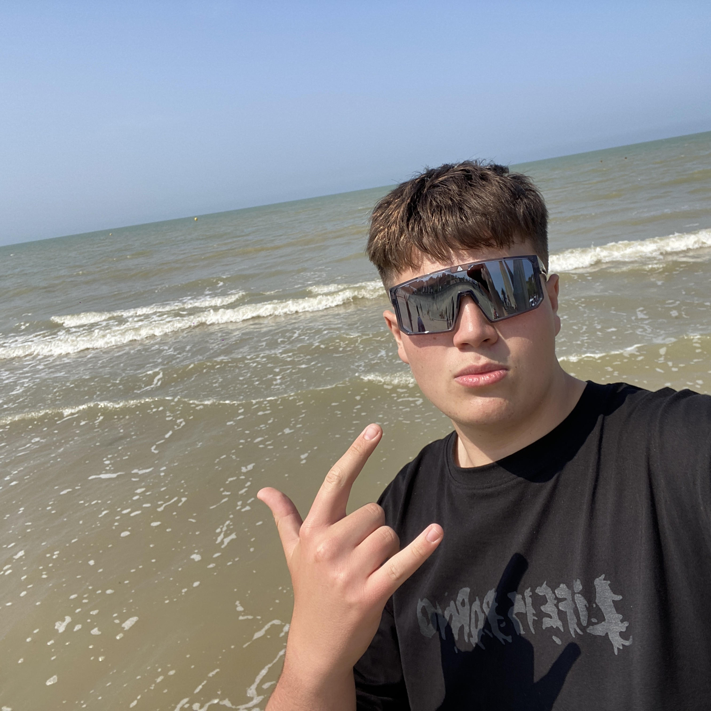

</> VÝVOJ
Od nápadu ke kódu
- HTML / CSS / JavaScript
- Medior
- Java
- Junior
- Python
- Junior
- C#
- Junior
STUDENT IT · PLZEŇSKÝ KRAJ
Propojuji sítě.
Tvořím digitální věci.
Jsem student IT na střední škole INFIS v Plzni. Mimo školu se věnuji síťové infrastruktuře, webovému vývoji a tvorbě aplikací.
Možná mě znáš jako Jondis, Jonda nebo Jony.

</> VÝVOJ
⌘ INFRASTRUKTURA & HARDWARE
Kamerové systémy CCTV s NVR i bez něj.
Reolink · Hikvision · Ubiquiti a další
NÁVRH PLATFORMY
Návrh platformy, která propojuje firmy se studenty hledajícími brigádu.
Prohlédnout prototypWEBOVÁ HRA · PWA
Vlastní PWA webová hra s ukládáním postupu. Roztřídit barvy, vyřešit hlavolam a pokračovat dál.
Vlastní projektLETNÍ PRAXE
Instalace optických sítí, chytré domácnosti a tvorba cenotvorného softwaru. Zkušenosti přímo z praxe.
Sítě · automatizace · vývojMIMO OBRAZOVKU. I U NÍ.
Občas v terénu, občas za mixážním pultem. A někdy prostě další game.
04 / KONTAKT
Máš nápad, nabídku spolupráce nebo společné téma? Napiš mi.
jonas@jonasbouse.cz